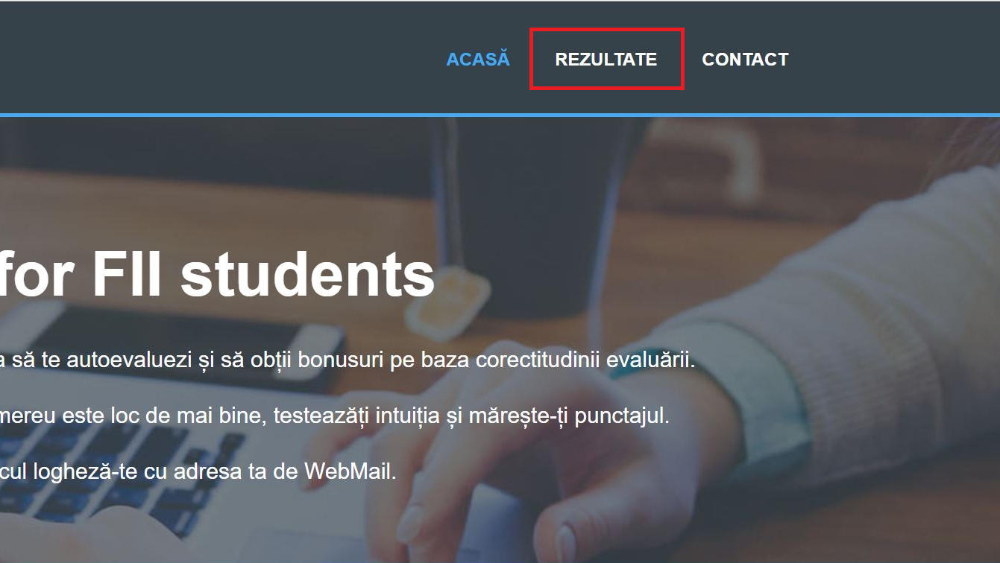
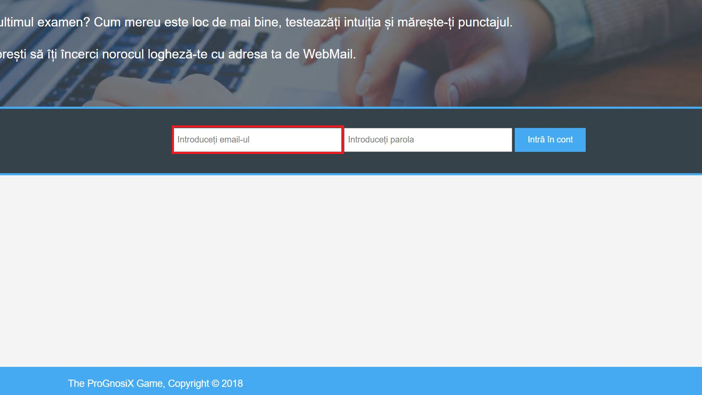
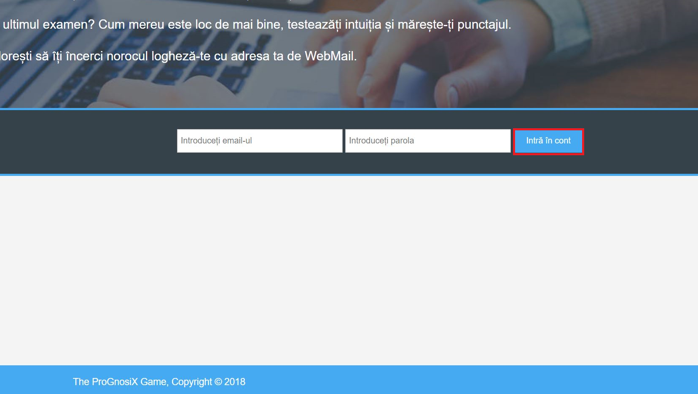
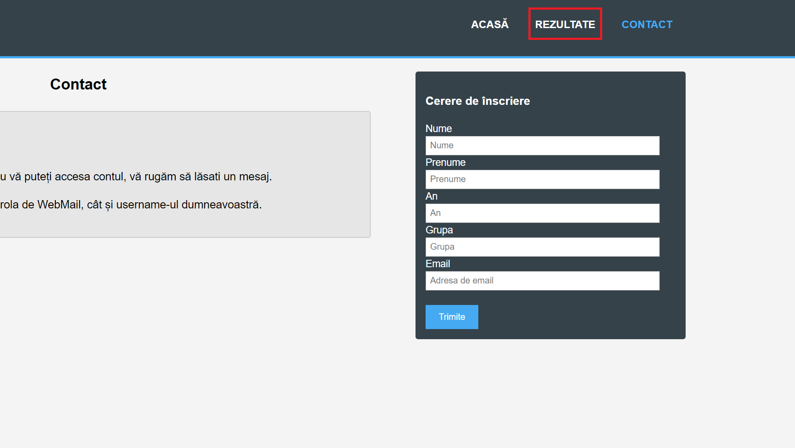
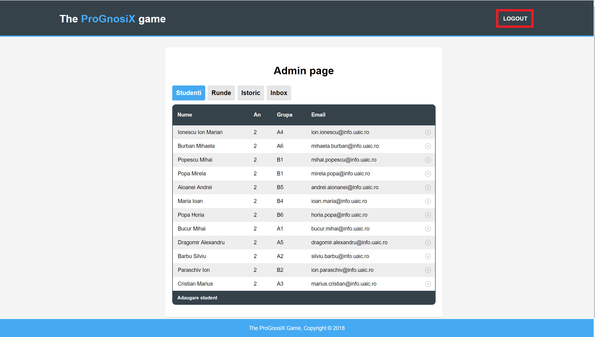

Această pagină conțtine un meniu din care utilizatorul poate sa vizualizeze celelalte pagini
și prezintă procesul de logare în aplicație, după cum urmează
în imaginile următoare.

Apasând pe tab-ul încercuit cu roșu REZULTATE se face trecerea în pagina care conține
rezultatele rundelor.
Apasând pe tab-ul încercuit cu roșu CONTACT se face trecerea în pagina care conține
o cerere de înscriere în cazul în care studentul nu are cont.

Pentru a vă loga trebuie completat email-ul în câmpul obligatoriu din imagine
încercuit cu roșu.
Pentru a vă loga trebuie completată parola în câmpul obligatoriu din imagine
încercuit cu roșu.

Următorul pas este trimiterea datelor prin apăsarea butonului încercuit cu roșu.
Pagina grades.php
Această pagină contine rezultatele rundelor încheiate. De asemenea de aici utilizatorii
se pot abona printr-un Feed RSS, sau pot vedea rezultatele sub formă de PDF sau CSV.
Din această pagină de asemenea utilizatorul se poate întoarce la pagina de logare,
apasând în zona indicată cu roșu.
Dacă utilizatorul nu are cont poate să acceseze pagina de CONTACT,
apasând în zona indicată cu roșu.
Apasând butonul de RSS încercuit cu roșu utilizatorul se poate abona sau poate vizualiza feed-ul current.
Vizualizarea prin Feed RSS a rezultatelor disponibile în pagina REZULTATE.
Butonul PDF încercuit cu roșu reprezintă un preview al rezultatelor rundei respective
care poate fi salvat sub formă de PDF.
Aici se poate observa un preview al pdf-ului.
Butonul CSV încercuit cu roșu downloadeaza rezultatele rundei respective
sub formă de CSV.
Pagina contact.php
Pagina contact are ca primă funcționalitate trimiterea unei cereri de
înscriere.
Din această pagină puteți naviga înapoi la pagina de logare prin apasarea
zonei indicate cu roșu.

Sau puteți naviga la pagina cu rezultate prin apasarea
zonei indicate cu roșu.
Completarea câmpurilor cu roșu sunt obligatorii, dacă utilizatorul dorește să
trimită o cerere de înscriere.
După finalizarea pasului anterior se apasă butonul încercuit cu roșu.
Pagina user.php
Această pagină conține informații despre utilizator, cât si despre activitatea lui.
Din această pagina utilizatorul poate vizualiza pagina cu rezulatate.
Sau se poate deloga.
Tab-ul încercuit cu roșu conține informații generale despre studentul logat.
Tab-ul încercuit cu roșu conține activitatea studentului logat,
respectiv rundele la care a particiat.
Tab-ul încercuit cu roșu conține rundele disponibile la care
studentului logat poate să participe.
Apasând pe câmpul încercuit cu rosu studentul poate sa participe la o alta ruda.
Pentru a participa la runda respectivă completarea câmpului încercuit cu roșu
este obligatorie.
Pentru a finaliza participarea la rundă trebuie apăsat butonul încercuit cu roșu.
Pagina admin.php
Această pagină conține mai multe funcționalități precum urmează.

În primul rând admin-ul se poate deloga prin apăsarea zonei indicate cu roșu.
Prin selectarea tab-ului cu studenți adminul poate vizualiza studentii.
Acesta poate șterge studenți la alegere prin apăsarea iconițelor din dreapta,
precum cea indicată cu roșu.
Sau poate adăuga un student nou prin apăsarea zonei indicate cu roșu.
Odată apăsat butonul de adăugare a unui student, va apărea modalul din imagine.
Apasând în zona indicată cu roșu se poate anula inițiativa de adăugare a studentului.
Pentru a adăga un student trebuie completate toate câmpurile indicate cu roșu.
Acțiunea de adăugare se finalizează prin apăsarea butonului indicat cu roșu.
Tab-ul Runde conține toate rundele active în momentul current.
Prin apăsarea iconițelor din dreapta, precum cea indicată cu roșu, rundele
se vor opri, iar în pagina cu rezultate se vor afisa rezultatele rundelor finalizate.
Prin apăsarea zonei indicate cu roșu se poate adăuga o rundă nouă.
Acest modal trebuie completat pentru adăugarea unei noi runde.
Câmpurile indicate cu roșu sunt obligatorii.
Pentru a finaliza actiunea de adăugare a unei runde trebuie apăsat butonul
indicat cu roșu.
Tab-ul Istoric conține toate rundele încheiate.
Apasând pe inconițele din dreapta precum cea indicată cu roșu se pot șterge rundele.
Tab-ul Inbox conține toate cereirle de înscriere.
Apasând pe inconițele din dreapta precum cea indicată cu roșu se pot șterge cererile.